犬貓認知障礙症候群（CDS）
Cognitive Dysfunction Syndrome in Dogs and Cats｜講者：陳緯 獸醫師（Wei Chen, DVM, MS；台中貝爾動物醫院博館分院神經科主治醫師）
2026 年 11 月 19 日｜聯盟獸醫教育中心 卓越講堂
講者投影片 PDF（CDS_20261119_CW.pdf，47 張＋封面）全部依序放入，編號依右下角頁碼；全場錄音（Plaud 逐字稿，含 12 題 Q&A）。語音辨識有聽錯處，已依投影片更正，不確定處以 ❔ 標示。
⭐ 本場重點
- CCDS 是進行性神經退化疾病，>8 歲犬盛行率 14–35%、15–16 歲達 68%，但 <2% 被正式診斷
- 病理和人類阿茲海默症相似：Aβ 斑塊與 CAA、神經發炎與能量代謝低下、膽鹼／多巴胺（MAO-B↑）／GABA 系統耗竭、腦溝變寬、腦室擴大、海馬迴萎縮
- 排除性診斷：先排除甲狀腺機能低下、Addison、失明耳聾、骨關節炎疼痛、結構性腦病；DISHAA 並非 CCDS 特有
- 量表：講者CCDR＋CADES 兩個都在就診前請飼主填。CCDR（13 題，≥50 判定 CCD，特異度高、對早期不敏感）、CADES（17 題，0–7 正常／8–23 輕度／24–44 中度／≥45 重度，最能抓早期）；MRI 主要用來排除其他病；NfL 是新興生物標記
- 台大回溯研究（講者碩論）：239 隻前腦症狀老犬中 腦腫瘤 48.5%、CCDS 15.4%；支持 CCDS 的是年紀較大、沒有癲癇、沒有偏側性缺損（CCDS 偏側缺損僅 10.8%，癲癇 5/37）
- 肌陣攣可能和 CCDS 有關（Brühl 2026 問卷 89%），但有研究設計與報告偏差
- Selegiline 0.5–1 mg/kg SID 早上給；propentofylline 5 mg/kg BID；焦慮與睡眠可用 gabapentin、BZD、SSRI/TCA（注意交互作用）
- 非藥物：環境豐富化、行為支持；不活動老犬 CCDS 風險高 6.47 倍
- 營養：6.5% MCT＋BPB 雙盲研究第 90 天所有面向改善、反應率 88%；另有 omega-3、抗氧化、L-carnitine、SAMe、phosphatidylserine、homotaurine
- 貓 FCDS：11–14 歲 28–33%、>15 歲 50%；VISHDAAL，夜間嚎叫最常見（40%）；先排除高血壓、CKD、甲亢、OA；用 AAFP 十個問題主動詢問
- 貓的處置：低入口貓砂盆、夜燈、擺設不變、費洛蒙；MCT 可能造成厭食，適口性很重要；藥物為仿單外，壓力管理更重要
- 🎤 Selegiline 講者偏好用在精神沉鬱的狗，很焦躁、一直叫、繞圈的狗要小心可能更躁；台灣目前沒有穩定貨源
- 🎤 MCT 處方 Purina NeuroCare、Hill's j/d Brain Care 台灣都沒進口；台灣可考慮 Science Diet「青春活力」（非處方）
- 🎤 病程是重要線索：CDS 多是半年到一年以上慢慢變差；一兩個月內快速惡化要先想結構性病變
- 🎤 日夜顛倒初期：白天曬太陽、白天多活動＋藥物（gabapentin 等）；中重度靠藥物，逐一試、換、組合
- 🎤 長期包尿布會造成尿灼傷與泌尿道感染，睡前帶出去多尿一次更好；CDS 本身不常造成猝死
場次資訊
▾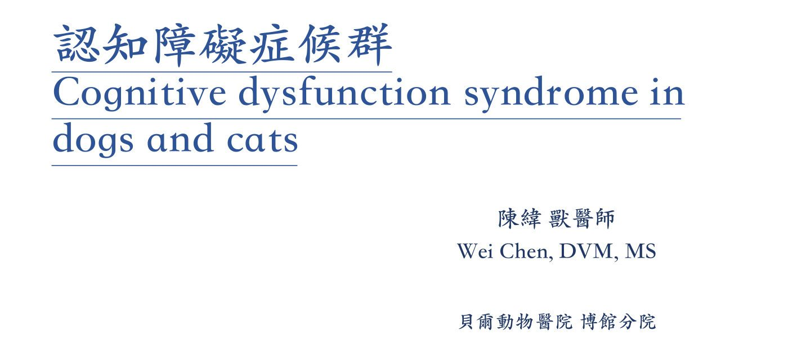
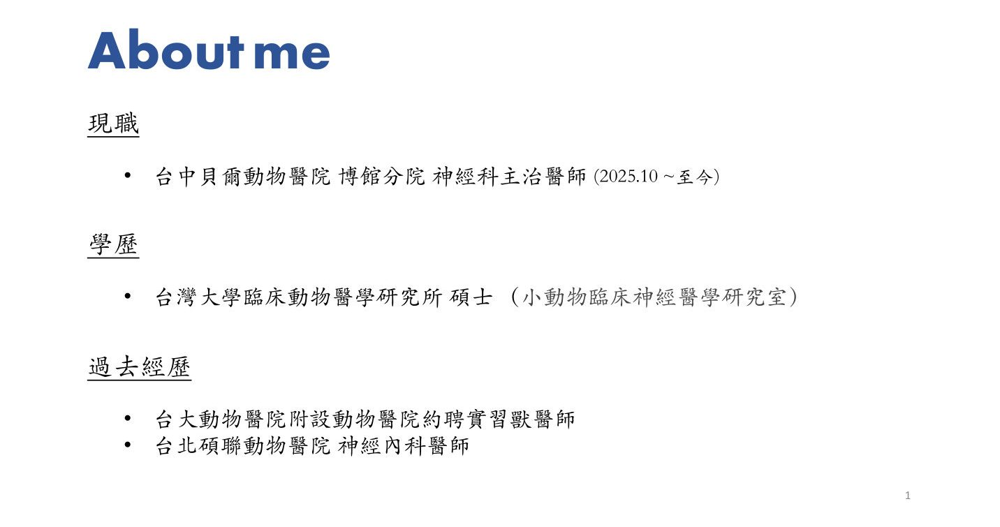
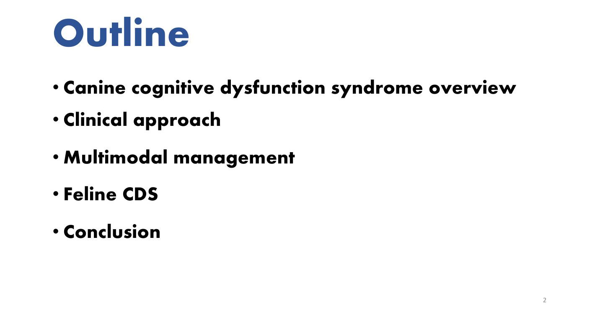
- 主題：認知障礙症候群 Cognitive dysfunction syndrome in dogs and cats。
- 講者：陳緯 獸醫師（Wei Chen, DVM, MS），台中貝爾動物醫院博館分院神經科主治醫師（2025.10 起）。台大臨床動物醫學研究所碩士（小動物臨床神經醫學研究室）；曾任台大動物醫院約聘實習獸醫師、台北碩聯動物醫院神經內科醫師。
- 投影片中的台大回溯研究（master thesis, Wei C., 2025）就是講者自己的碩士論文。
- 大綱：犬 CCDS 概論 → 臨床診斷思路 → 多模式治療 → 貓 FCDS → 結論。
- 形式：聯盟獸醫教育中心 卓越講堂（2026-11-19，線上），MSD 贊助。
- 🎤 錄音：Plaud 分享連結（講者1＝陳緯醫師，講者2＝主持人）。講者說內容以犬為主（研究較透徹），最後一小段帶到貓。
1. CCDS 概論與病理生理
▾
正確辨識是第一步。

- 俗稱「犬失智症」；進行性、與年齡相關的神經退化疾病。
- 盛行率：>8 歲犬 14–35%；11–12 歲 28%；15–16 歲高達 68%。
- 嚴重低估：受影響犬只有 <2% 被正式診斷；飼主（甚至獸醫）常把早期症狀當成「只是老了」。
病理生理：阿茲海默症的天然轉譯模型

- Aβ42 瀰漫性堆積形成類澱粉斑，分布在前額葉皮質、頂葉、海馬迴。
- 突觸破壞：可溶性 Aβ 抑制長期增益作用（LTP）、破壞樹突棘。
- CAA：Aβ40 干擾血管周圍液體引流 → 血管脆弱、皮質微出血、慢性低灌流、類淋巴（glymphatic）清除受損。

- 大腦耗用靜止時 20% 的氧，對氧化傷害特別脆弱。
- 粒線體功能異常：老化造成電子漏失 → ATP 生成受損、葡萄糖代謝低下（這是後面 MCT／酮體飲食的理論基礎）。
- 膠質細胞活化：Aβ 沉積 → 小膠質細胞與星狀膠質細胞慢性促發炎。
- 神經發炎指標和失智嚴重度的相關性，比類澱粉斑本身更強。

- 膽鹼性衰退：中樞乙醯膽鹼大量減少 → 記憶、學習變差（→ phosphatidylserine 的作用點）。
- MAO-B 活性隨年齡上升：加速多巴胺分解 → 獎賞與動機下降（→ selegiline 的作用點）。
- 抑制失能：GABA 中間神經元退化 → 皮質抑制不足 → 焦慮、神經網路不穩定（→ gabapentin、BZD 的作用點）。
🎤 講者：雖然離臨床有點遠，還是要講病生理，因為它會影響治療選擇。CAA 是 Aβ 選擇性沉積在軟腦膜與皮質微血管壁，血管壁增厚、彈性變差 → 微出血、低灌流 → 類淋巴系統排廢物更差，形成惡性循環。神經細胞膜富含不飽和脂肪酸，對氧化傷害特別敏感。

- 腦容積減少：腦溝明顯變寬。
- 代償性腦室擴大。
- 海馬迴萎縮：齒狀回與 CA1 區選擇性神經元凋亡 → 空間學習與記憶受損。
2. 診斷思路
▾
- 排除性診斷：沒有任何單一臨床檢查能在活體確診 CCDS；要排除全身性、代謝性、骨科與顱內疾病的「模仿者」。
- 行為改變應該先做醫療檢查，不要直接貼上「行為問題」標籤。
- 完整病史、理學檢查、眼科檢查、神經學檢查；最低資料庫：CBC、生化、尿檢⋯
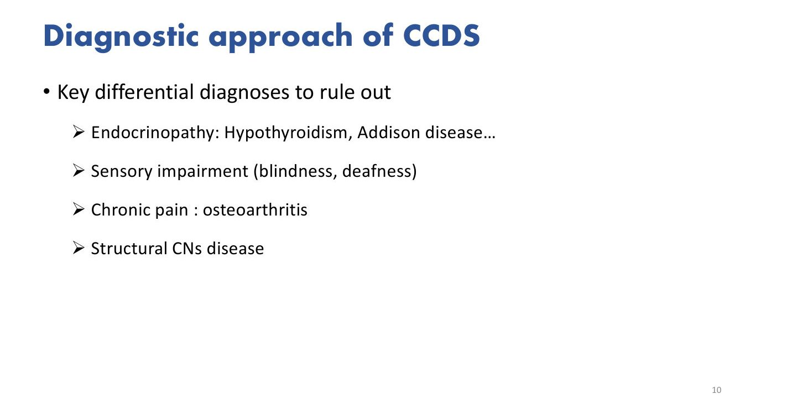
- 內分泌疾病：甲狀腺機能低下、Addison⋯
- 感官退化：失明、耳聾
- 慢性疼痛：骨關節炎
- 結構性中樞神經疾病

| DISHAA | 中文 |
|---|---|
| Disorientation | 定向感障礙 |
| altered social Interaction | 社交互動改變 |
| altered Sleep–wake cycle | 睡眠週期改變 |
| House soiling and loss of learned behaviors | 亂大小便、已學會的行為消失 |
| altered Activity levels | 活動量改變 |
| increasing Anxiety | 焦慮增加 |
注意：這些表現不是 CCDS 特有，其他前腦疾病也會出現。
- 🎤 D：常卡在角落或牆角出不來，有時其實沒被卡住，只是進退兩難。
- 🎤 S：一開始是晚上睡不好、白天一直睡；後期一整天能休息的時間很少，即使很累，腦部類似強迫行為讓牠一直醒著轉圈、嚎叫。
- 🎤 H：不只亂尿，已學會的指令（坐下、握手）也開始做不出來或常出錯。
- 🎤 A（焦慮）：對新環境、新刺激的接受度下降，來醫院也很難接受長時間保定。
- 🎤 這些都是前腦功能，所以中風、感染、發炎、腫瘤都可能有一樣的表現。
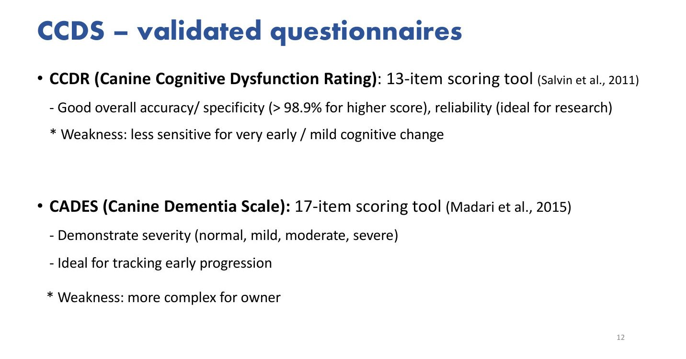
| 量表 | 內容 | 優點 | 缺點 |
|---|---|---|---|
| CCDR（Canine Cognitive Dysfunction Rating；Salvin 2011） | 13 題 | 整體準確度、特異度高（高分時 >98.9%），信度好，適合研究 | 對很早期／輕微的認知變化較不敏感 |
| CADES（Canine Dementia Scale；Madari 2015） | 17 題 | 可分級（正常、輕度、中度、重度），適合追蹤早期進展 | 對飼主來說較複雜 |
量表詳解：講者怎麼用
- 🎤 懷疑 CDS，或飼主自己覺得「是不是失智」時，在進診間之前就請飼主填問卷。
- 🎤 CCDR 和 CADES 兩個都給：「填問卷又沒有什麼成本」，兩者各有長處。
- 🎤 填完就大概知道病患有哪些症狀、可以從哪裡幫牠，再接著做理學、神經學檢查與排除診斷。
- DISHAA 是用來歸納症狀的架構（投影片 11），但不是 CCDS 特有，其他前腦疾病也會有。
CCDR（Canine Cognitive Dysfunction Rating）⭐ 講者常用
- 準確度、特異度高（高分時 >98.9%），信度好，適合研究；缺點是對很早期、輕微的認知變化不敏感。
- 🎤 講者：題目較短；高分的狗很高機率就是 CCDS，結果一致，適合用來看病程變化或治療研究。
- 💡 判讀：≤39 正常、40–49 有風險、≥50 判定 CCD。前 7 題問「現在多常發生」，後 6 題問「和 6 個月前比」，所以同時看現況和變化。
- 💡 加權最重的兩題是找不到掉在地上的食物（×2）和認不出熟人或動物（×3），這兩題正好對應 §1 的海馬迴萎縮、空間學習與記憶受損。這兩題分數高時，要先確認不是失明、嗅覺或聽力退化（§2 鑑別診斷的「感官退化」）。
- 💡 為什麼對早期不敏感：門檻設在 40 分（約總分範圍的 40%），輕度的狗常還落在「正常」。Haake 2024 比較 597 隻犬，CCDR 判為正常的比例最高（67%）。
展開 13 題原文與計分
| # | 題目 | 選項（1→5 分） |
|---|---|---|
| 1 | 多常來回踱步、繞圈或漫無目的遊走？ | 從不／每月一次／每週一次／每天一次／每天多次 |
| 2 | 多常呆望牆壁或地板？ | |
| 3 | 多常卡在物體後面繞不出來？ | |
| 4 | 多常認不出熟悉的人或動物？ | |
| 5 | 多常撞到牆或門？ | |
| 6 | 多常在被摸時走開或閃避？ | |
| 7 | 多常找不到掉在地上的食物？ | 從不／1–30%／31–60%／61–99%／總是 |
| 8 | 和 6 個月前比，踱步、繞圈、遊走？ | 少很多／少一點／一樣／多一點／多很多 |
| 9 | 和 6 個月前比，呆望牆壁或地板？ | |
| 10 | 和 6 個月前比，在以前保持乾淨的地方大小便？（從沒亂尿過選「一樣」） | |
| 11 | 和 6 個月前比，找不到掉在地上的食物？（×2） | |
| 12 | 和 6 個月前比，認不出熟悉的人或動物？（×3） | |
| 13 | 和 6 個月前比，活動時間？ | 反向：多很多＝1 … 少很多＝5 |
雪梨大學原版表單是第 11、12 題整題 ×2、×3；Yoon 2025 附錄的版本只對 3–5 分加權。兩種算法滿分都是 80。
CADES（Canine Dementia Scale）⭐ 講者常用
- 可以分出正常、輕度、中度、重度，適合追蹤早期進展；缺點是對飼主較複雜。
- 🎤 講者：題目較長，但能看出整體變化，追蹤病情比 CCDR 好；飼主填寫比較需要協助。
- 💡 判讀：0–7 正常老化、8–23 輕度、24–44 中度、45–95 重度。門檻很低（約總分範圍的 7%），所以最能抓到輕度：Haake 2024 中 CADES 只判 29% 為正常，CCDR 是 67%。
- 💡 這點和講者反覆強調的「早期介入」直接相關：§6 講到認知豐富化要趁早，中後期效果有限；§8 也說很後期再多做什麼都有限。所以想抓早期、想追蹤治療反應時，CADES 比較有用。
- 💡 睡眠面向小計 ×2，因為夜間遊走、叫是飼主最受困擾、也最常帶來就診的原因（Q6 主持人也說這是常見就診原因）。
- 💡 計分是看頻率：0 從未、2 過去 6 個月至少一次、3 至少每月一次、4 每月 2–4 次、5 每週數次（沒有 1 分）。
展開 17 題原文與計分
| 面向 | 題目 | 分數 |
|---|---|---|
| A 空間定向 | ① 在熟悉環境（室內、外）迷失方向 ② 認不出熟悉的人或動物 ③ 對熟悉物品（椅子、垃圾桶）反應異常 ④ 白天漫無目的遊走、坐立不安 ⑤ 做以前學會的事的能力下降 | 0–25 |
| B 社交互動 | ⑥ 和人、和其他狗的互動改變（玩、撫摸、迎接） ⑦ 個體行為改變（探索、玩耍、表現） ⑧ 對指令的反應與學新事物的能力 ⑨ 易怒 ⑩ 表現攻擊 | 0–25 |
| C 睡眠週期 | ⑪ 夜間異常（遊走、叫、坐立不安） ⑫ 從失眠轉為嗜睡 | 小計 ×2，0–20 |
| D 亂大小便 | ⑬ 在家中隨處排泄 ⑭ 在籠內或睡覺處排泄 ⑮ 示意要排泄的方式改變 ⑯ 剛散步回來就在室內排泄 ⑰ 在不尋常的地點（草地、水泥地）排泄 | 0–25 |
DISHAA Assessment Tool症狀架構
- 🎤 講者用 DISHAA 來說明症狀（投影片 11），也提到有 DISHAA 問卷，但 Q&A 說實際讓飼主填的是 CCDR 和 CADES。
- 💡 判讀：4–15 輕度、16–33 中度、>33 重度。只記 8 歲以後新出現或惡化的行為。
- 💡 優點是題目和臨床症狀一一對應，拿來衛教飼主很好用；缺點是它是篩檢工具，驗證程度不如 CCDR、CADES，分數也不代表一定是 CCDS。
- 💡 MCT 雙盲研究（Pan 2018，§7）就是用 DISHAA 六個面向評估療效（第 30 天 5/6、第 90 天全部改善）。
展開 18 題
| 面向 | 題目（0 無／1 輕度／2 中度／3 重度） |
|---|---|
| D 定向感障礙 | 卡住、繞不過物體、走到門的鉸鏈側；呆望牆壁、地板或空中；不認得熟悉的人或寵物；在家裡或院子迷路；對視覺、聲音刺激反應變少 |
| I 社交互動 | 對訪客、家人或其他動物更易怒、害怕或攻擊；對靠近、打招呼、被撫摸的興趣下降 |
| S 睡眠週期 | 踱步、不安、睡得少、夜間醒來；夜間叫 |
| H 亂大小便、學習與記憶 | 較難學新事物或回應已學會的指令、名字；室內尿或便、較少示意要出門；較難引起注意、容易分心 |
| A 活動 | 探索、玩玩具、和家人或其他寵物玩的意願下降；漫無目的地踱步、遊走；重複行為（繞圈、咬、舔、望天） |
| A 焦慮 | 和飼主分開時更焦慮；對視覺、聲音刺激反應更強或更害怕；更怕某些地方（新環境、出門） |
CCAS（Canine Cognitive Assessment Scale）課堂未提・文獻補充
- 💡 每題 0 從不、1 每月一次、2 每週一次、3 幾乎每天，定向感面向小計 ×2。0–7 正常、8–40 輕中度、41–69 重度。和 CADES 一致性最高（κ 0.79），常一起出現在比較研究中。
把量表放進講者的診斷流程
| 步驟 | 做什麼 | 來源 |
|---|---|---|
| 1. 就診前 | 飼主填 CCDR＋CADES；CCDR ≥50 或 CADES ≥8 就值得往 CDS 方向詳細問診 | 🎤＋💡 門檻 |
| 2. 看診 | 完整病史、理學、眼科、神經學檢查；CBC、生化、尿檢 | |
| 3. 排除模仿者 | 甲狀腺機能低下、Addison、失明或耳聾、骨關節炎疼痛、結構性腦病 | |
| 4. 看紅旗 | 有癲癇、有偏側性缺損、一兩個月內快速惡化 → 更用力推 MRI（腦腫瘤佔前腦症狀老犬近一半） | 🎤 |
| 5. 追蹤 | 開始治療後用同一份量表重填，比較分數變化；CADES 較能看出輕度改變 | 💡 |
文獻：Salvin HE et al. Vet J 2011;188:331–336（CCDR）｜Madari A et al. Appl Anim Behav Sci 2015;171:138–145（CADES）｜Le Brech S et al. Animals 2022;12:3538（CCAS）｜Haake J et al. Front Vet Sci 2024;11:1374511（三量表比較，597 隻犬）｜Yoon JW et al. Animals 2025;15:1974（三量表＋血清 NfL，附錄有完整問卷）｜DISHAA Assessment Tool, Landsberg／Purina。
進階影像（MRI）


- CCDS 的 MRI 表現：腦溝加深、腦室變大（Hasegawa 2005，橫切 T2 FLAIR）；丘腦間黏合（inter-thalamic adhesion）變小（矢狀 T2）；白質疏鬆（leukoaraiosis）（Scarpente 2016，FLAIR）。
- MRI 更重要的目的是排除其他結構性腦病。
- 🎤 丘腦間黏合變矮變小，第三腦室相對變大；leukoaraiosis 是兩側側腦室周圍大致對稱的 T2／FLAIR 高訊號，要和發炎、感染鑑別。
- 🎤 影像特徵要連結臨床症狀：單純退化、肝腦病、某些先天疾病也會有腦實質減少；而且萎縮程度不一定和症狀嚴重度相符，萎縮較少的狗症狀可能反而較重。
- 🎤 中老年狗常有慢性進展性疾病，MRI 最重要的是排除腫瘤。
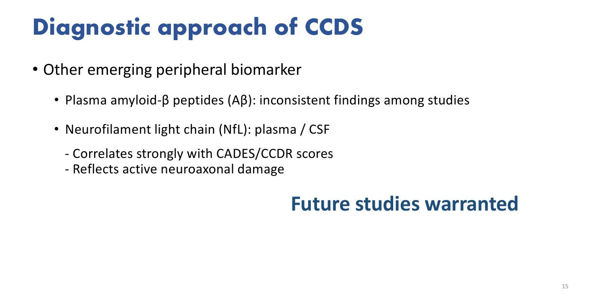
- 血漿 Aβ：各研究結果不一致。
- 神經絲輕鏈（NfL）（血漿／CSF）：和 CADES、CCDR 分數高度相關，反映進行中的神經軸突損傷。
- 仍需更多研究。
- 🎤 為什麼要找血液標記：MRI 要全身麻醉，問卷又高度仰賴飼主觀察。NfL 上升代表正在發生的軸突損傷，所以其他疾病（如腦膜腦炎 ❔、甚至椎間盤疾病）也會上升，只是幅度可能不同。
3. 臨床上哪些參數能幫忙？（台大回溯研究）
▾
- 239 隻 >7 歲（7–19 歲，中位數 12 歲）有前腦症狀的犬，最常見診斷：腦腫瘤 116 隻（48.5%）、CCDS 37 隻（15.4%）、發炎性疾病 30 隻（12.5%）、其他 23.6%。
- 也就是說，老犬出現前腦症狀，將近一半是腦腫瘤，CCDS 只佔約 1/7。
- 🎤 收案約 3–4 年；設定 >7 歲是為了排除自發性癲癇族群；「其他」包含中風、不明原因癲癇等。
- 🎤 臨床上老狗常有共病、飼主擔心麻醉，所以想找出做影像之前就能幫忙判斷的因子。

- 偏側性神經缺損：全體 84 隻（35.1%）有。
- 各組比例：CCDS 10.8%（4/37）、腫瘤（NEO）43.9%、發炎（INF）43.3%、腦血管（CVE）39.1%。

| 投影片 | 中文 |
|---|---|
| Multivariate logistic regression (CCDS vs. non-CCDS group) | 多變項邏輯斯迴歸，比較 CCDS 組與非 CCDS 組 |
| ✓ Older age | 年紀較大 |
| ✓ Absence of seizure | 沒有癲癇 |
| ✓ Absence of lateralized neurologic deficit | 沒有偏側性神經缺損 |
| ➢ Seizure was seen in 5/37 dogs | CCDS 組 37 隻中 5 隻有癲癇 |
- 5/37 ≈ 13.5%，癲癇不能直接排除 CCDS，但比例偏低。
- 老犬有前腦症狀，如果有癲癇或偏側性缺損（單側本體感覺缺損、單側威脅反射消失、往同一側轉圈），要優先懷疑結構性病灶，建議 MRI，不要直接歸因於老化失智。
🎤 講者：全部都掃描當然一隻都不會漏，但這些因子能告訴我們哪些病患要更用力推進階影像，因為很可能是結構性問題，而那些是有機會治療的。
4. 癲癇與 CCDS：肌陣攣
▾
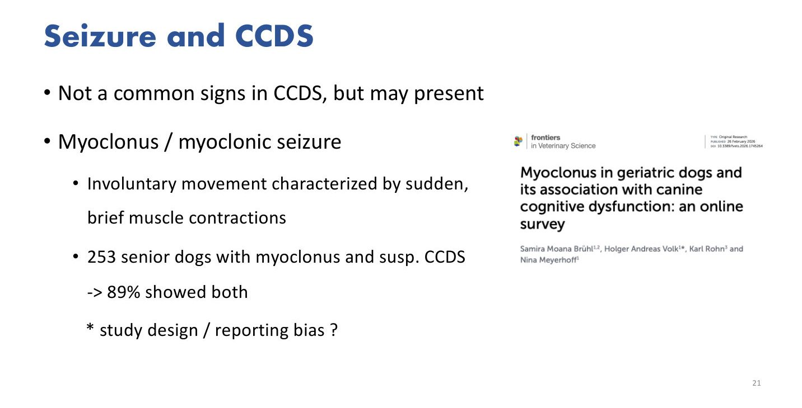
| 投影片 | 中文 |
|---|---|
| Not a common sign in CCDS, but may present | 癲癇不是 CCDS 的常見症狀，但可能出現 |
| Myoclonus / myoclonic seizure | 肌陣攣／肌陣攣型發作 |
| Involuntary movement characterized by sudden, brief muscle contractions | 不自主運動：突然、短暫的肌肉收縮 |
| 253 senior dogs with myoclonus and susp. CCDS → 89% showed both | 253 隻有肌陣攣且疑似 CCDS 的老犬 → 89% 兩者兼具 |
| * study design / reporting bias? | 研究設計／報告偏差？ |
引用論文：Brühl SM, Volk HA, Rohn K, Meyerhoff N. Myoclonus in geriatric dogs and its association with canine cognitive dysfunction: an online survey. Front Vet Sci, 2026（2026 年 2 月出版）。
- 線上問卷、飼主自願填寫：狗有這些問題的飼主比較會來填（選擇偏差）。
- 肌陣攣與 CCDS 多由飼主回報，不是獸醫或 MRI／EEG 確認，容易把顫抖、睡眠中抽動誤認為肌陣攣（報告偏差）。
- 收案對象本身就偏向兩者兼具，所以 89% 不能解讀為盛行率。
- 人類阿茲海默症也有肌陣攣與癲癇風險上升的現象，生物學上說得通，但犬的證據等級仍低。
- 🎤 典型肌陣攣：頭頸部突然、局部的抽動，頭會點一下或後仰，可能往後跌坐；講者展示了論文補充影片和自己懷疑肌陣攣的病例（突然點頭、往後坐）。
- 🎤 這種發作算肌陣攣、癲癇還是運動障礙並沒有明確區分，要確定得做腦電圖，犬貓臨床上困難，所以兩種說法都有人用。
5. 治療：藥物
▾Selegiline（MAO-B 抑制劑）
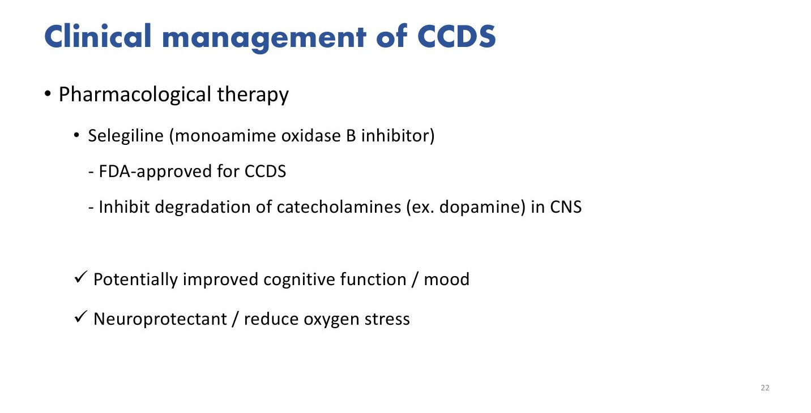

| 投影片 | 中文 |
|---|---|
| Selegiline (monoamine oxidase B inhibitor) | Selegiline：單胺氧化酶 B（MAO-B）抑制劑（投影片拼成 monoamime） |
| FDA-approved for CCDS | 美國 FDA 核准用於犬 CCDS |
| Inhibit degradation of catecholamines (ex. dopamine) in CNS | 抑制中樞兒茶酚胺（如多巴胺）的分解 |
| ✓ Potentially improved cognitive function / mood | 可能改善認知功能與情緒 |
| ✓ Neuroprotectant / reduce oxygen stress | 神經保護、減少氧化壓力 |
| Large clinical trial (n = 641) → 77.2% show overall improvement at day 60 | 大型臨床試驗 641 隻犬，第 60 天 77.2% 整體改善 |
| 0.5–1 mg/kg SID | 每天一次 0.5–1 mg/kg |
| ✓ Well tolerated in geriatric patient | 老年病患耐受性好 |
| ✓ Suggest to apply in the morning | 建議早上給藥 |
| * Possible adverse effect: GI, CNS effect (restlessness, increased salivation) | 可能副作用：腸胃道、中樞神經（躁動不安、流涎增加） |
引用論文：Campbell S, Trettien A, Kozan B. A noncomparative open-label study evaluating the effect of selegiline hydrochloride in a clinical setting. Vet Ther 2001;2(1):24–39.
- 為什麼早上給：selegiline 代謝產物含 L-amphetamine／L-methamphetamine，有輕微興奮作用，晚上給可能影響睡眠，而 CCDS 本來就常日夜顛倒。
- 77.2% 要打折看：Campbell 2001 是無對照、開放標籤試驗，飼主知道狗在吃藥，改善比例可能偏高。
- 藥物交互作用：不要和 SSRI（fluoxetine）、TCA（clomipramine、amitriptyline）、tramadol、amitraz（除蝨項圈／藥浴）併用，有血清素症候群風險；換藥時一般間隔約 2 週。
- 通常給藥後約 1 個月評估反應；美國商品名 Anipryl。
- 🎤 講者的選藥習慣：比較會用在精神沉鬱為主的病患；對很焦躁、一直叫、一直轉圈走個不停的狗反而謹慎，因為這藥會讓狗比較清醒，有時會更焦躁（文獻沒特別寫，屬臨床經驗）。早上給，不要給完就去睡覺。
- 🎤 台灣目前找不到穩定進貨的通路；手上有的可能是以前買的僅存庫存，講者也歡迎知道貨源的人告訴他。
Propentofylline（黃嘌呤衍生物）

| 投影片 | 中文 |
|---|---|
| Propentofylline (xanthine derivative) | Propentofylline：黃嘌呤衍生物 |
| Licensed in Europe to treat dullness / lethargy for senior dog | 歐洲核准用於老犬精神沉鬱、嗜睡 |
| Phosphodiesterase inhibitor: block cellular uptake of adenosine | 磷酸二酯酶抑制劑：阻斷細胞對腺苷的回收 |
| → vasodilation and improved cerebral blood flow | → 血管擴張、改善腦血流 |
| → Neuroprotective / anti-inflammatory property: may help to slow the disease process | → 神經保護、抗發炎，可能延緩疾病進展 |
| Dosage: 5 mg/kg BID | 劑量：5 mg/kg 每天兩次 |
| * Limited effect in some of the CCDS core cognitive signs | 對部分 CCDS 核心認知症狀效果有限 |
💡 歐洲商品名 Vivitonin／Karsivan。定向感、日夜顛倒、居家訓練退化這類核心認知症狀，第一線仍是 selegiline。
🎤 講者：propentofylline 有機會延緩病程，但對已經出現的認知症狀效果沒那麼明顯；錄音中關於「能否讓嗜睡的狗變清醒」這句辨識不清 ❔，和你的 ✍️ 筆記一起看。
針對焦慮與睡眠的藥物
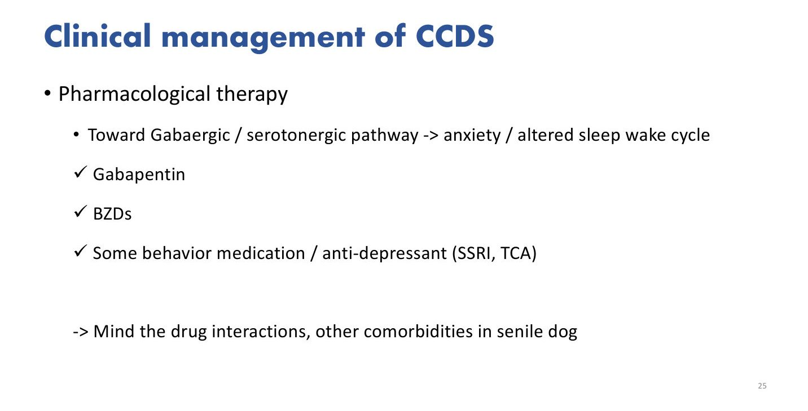
- 針對 GABA／血清素路徑 → 處理焦慮、睡眠週期紊亂：gabapentin、benzodiazepines、部分行為藥物／抗憂鬱劑（SSRI、TCA）。
- 要注意藥物交互作用與老犬的其他共病。
🎤 講者：SSRI 和 TCA 完全不建議一起用（血清素症候群）；SSRI、SNRI、TCA 這類行為用藥交互作用多，用藥前要先看共病。
6. 治療：非藥物
▾環境豐富化
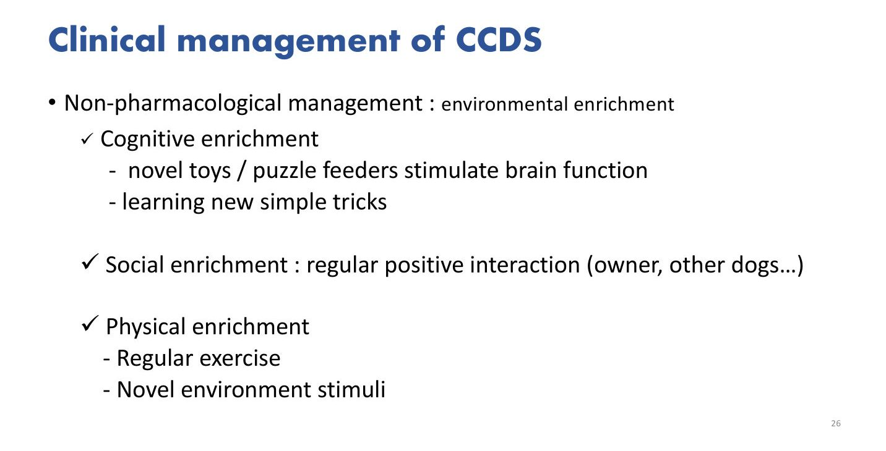
| 投影片 | 中文 |
|---|---|
| ✓ Cognitive enrichment — novel toys / puzzle feeders stimulate brain function; learning new simple tricks | 認知豐富化：新玩具、益智餵食器刺激大腦；學新的簡單指令 |
| ✓ Social enrichment: regular positive interaction (owner, other dogs…) | 社交豐富化：和飼主、其他狗規律的正向互動 |
| ✓ Physical enrichment — regular exercise; novel environment stimuli | 身體豐富化：規律運動、新環境的刺激（如換散步路線） |
行為支持

| 投影片 | 中文 |
|---|---|
| ✓ Predictable daily routines (feed, walk, sleep): reduce anxiety and confusion | 固定、可預期的作息（餵食、散步、睡覺）→ 減少焦慮與混亂 |
| ✓ Sensory navigation: non-slip rugs and audible cues / hand signals aid orientation | 感官導航：止滑地墊、聲音提示或手勢幫助定向 |
| ✓ House-soiling support: frequent outdoor trips help toilet training loss | 亂大小便：增加外出如廁次數，彌補如廁訓練退化 |
運動很重要

- 不活動的老犬發生 CCDS 的風險高 6.47 倍。
- 運動的好處是多方面的；但要考慮身體限制（關節炎等）。
- 🎤 講者認為早期 CDS 的非藥物處置可能比藥物更重要。
- 🎤 認知豐富化要趁早：中後期狗狗已經「活在自己的世界」，再給新玩具、益智玩具效果有限。
- 🎤 老狗容易日復一日完全一樣的生活，跟人一樣，缺少新刺激的大腦退化更快。
- 🎤 作息要可預測但不要一成不變：差不多時間散步，但今天去 A 公園、過兩天換另一個公園。
- 🎤 亂尿：很多人選擇包尿布，但長期包尿布會增加尿灼傷與泌尿道感染；睡前如果還能走，帶出去多尿一次，對夜間亂尿更有幫助。
- 🎤 不動的老狗風險高「6.5 倍以上」，和接觸新刺激等多種因素有關。
7. 治療：營養介入
▾MCT 飲食
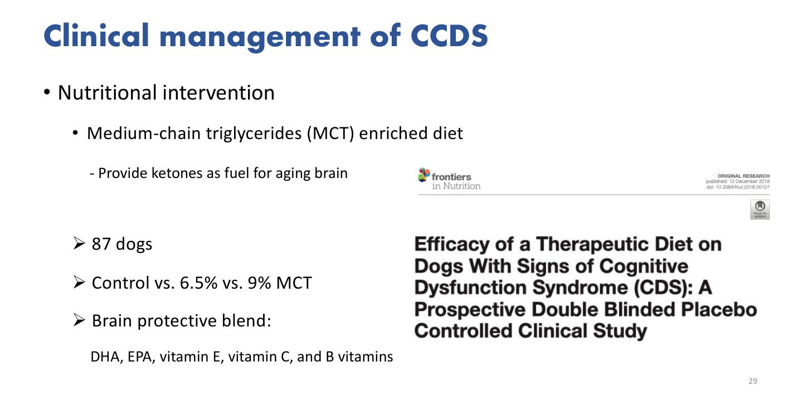

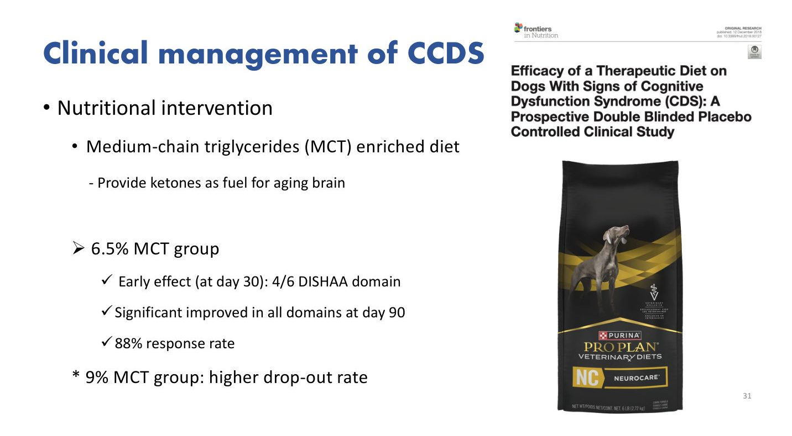
| 投影片 | 中文 |
|---|---|
| Medium-chain triglycerides (MCT) enriched diet — provide ketones as fuel for aging brain | 添加中鏈三酸甘油酯（MCT）的飲食：提供酮體作為老化大腦的能量 |
| 87 dogs；Control vs. 6.5% vs. 9% MCT | 87 隻犬；對照組 vs. 6.5% MCT vs. 9% MCT |
| Brain protective blend: DHA, EPA, vitamin E, vitamin C, and B vitamins | 護腦配方（BPB）：DHA、EPA、維生素 E、C、B 群 |
| 6.5% MCT group — early effect (at day 30): 5/6 DISHAA domains | 6.5% 組：第 30 天就有 5/6 個 DISHAA 面向改善（🎤 講者口述 5/6；另一張投影片寫 4/6） |
| Significant improvement in all domains at day 90 | 第 90 天所有面向都顯著改善 |
| 88% response rate | 反應率 88% |
| * 9% MCT group: higher drop-out rate | 9% 組退出率較高 |
引用論文：Pan Y et al. Efficacy of a Therapeutic Diet on Dogs With Signs of Cognitive Dysfunction Syndrome (CDS): A Prospective Double Blinded Placebo Controlled Clinical Study. Front Nutr, 2018.
- 🎤 講者口述第 30 天是 6 項中 5 項改善，第 90 天所有症狀都顯著進步，有效率近九成。9% 組因油脂高，無法繼續或飼主選擇停用的比例較高，6.5% 就足夠。
- 🎤 研究由 Purina 贊助，6.5% MCT 配方後來商品化為 Purina NeuroCare（NC），台灣沒有進口，要找國外通路。
護腦配方（BPB）

- Omega-3（EPA／DHA）：抗發炎；高劑量可改善學習能力。
- 抗氧化網絡：維生素 E、C、硒、類黃酮、類胡蘿蔔素（植物萃取）→ 中和粒線體活性氧（ROS）。
- L-carnitine／α-lipoic acid：支持粒線體功能，特別能改善記憶。
- 投影片例圖：Hill's Prescription Diet j/d Cognitive + Mobility、Science Diet Small & Mini Adult 7+ Senior Vitality。
🎤 講者：Hill's 以前的腦部處方 b/d 現在和關節配方合併成 j/d Brain Care（Cognitive + Mobility），台灣一樣沒有進口。台灣買得到的是右下角 Science Diet 的「青春活力」配方（非處方），有添加這些成分，飼主詢問時可以考慮。
SAMe
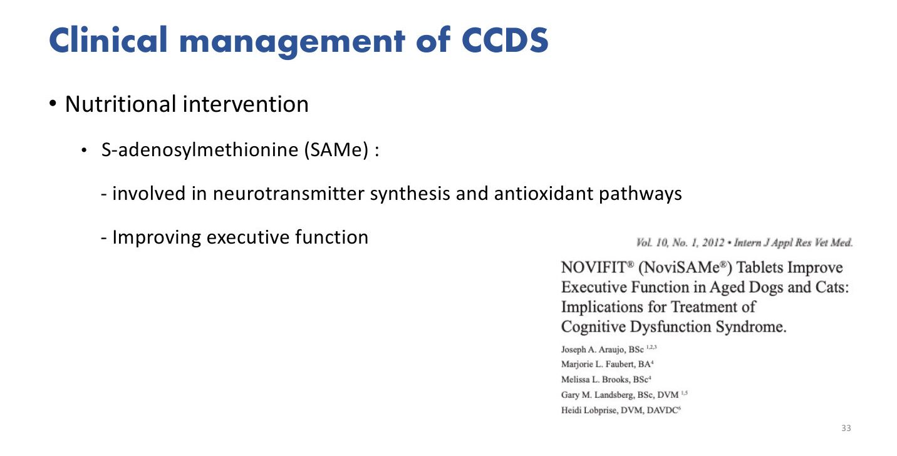
- 參與神經傳導物質合成與抗氧化路徑；可改善執行功能。
- 🎤 有臨床試驗支持，對延緩 CDS 進展有幫助。
Phosphatidylserine
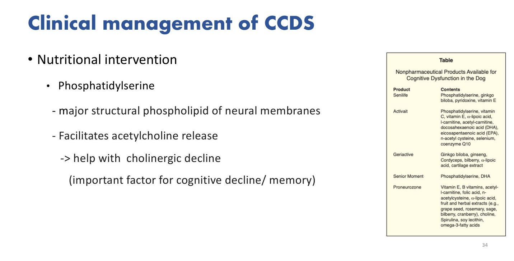
| 投影片 | 中文 |
|---|---|
| Major structural phospholipid of neural membranes | 神經細胞膜的主要結構磷脂 |
| Facilitates acetylcholine release → help with cholinergic decline (important factor for cognitive decline / memory) | 促進乙醯膽鹼釋放 → 改善膽鹼性衰退（認知與記憶退化的重要因素） |
📸 現場投影片右側另有表格 Nonpharmaceutical Products Available for Cognitive Dysfunction in the Dog（講義 PDF 版沒有這張表）：
| 產品 | 成分 |
|---|---|
| Senilife | Phosphatidylserine、ginkgo biloba（銀杏）、pyridoxine（維生素 B6）、vitamin E |
| Activait | Phosphatidylserine、vitamin C、vitamin E、α-lipoic acid、L-carnitine、acetyl-L-carnitine、DHA、EPA、N-acetyl cysteine、selenium、coenzyme Q10 |
| Geriactive | Ginkgo biloba、ginseng（人參）、Cordyceps（冬蟲夏草）、bilberry（山桑子）、α-lipoic acid、cartilage extract |
| Senior Moment | Phosphatidylserine、DHA |
| Proneurozone | Vitamin E、B vitamins、acetyl-L-carnitine、folic acid、N-acetylcysteine、α-lipoic acid、fruit and herbal extracts（grape seed、rosemary、sage、bilberry、cranberry）、choline、Spirulina、soy lecithin、omega-3 fatty acids |
🎤 講者：這篇是快 20 年前的論文，但 Senilife、Activait 現在市面上還很常見（中文名講者說的是「腦活素」「腦力活」❔），都含 PS。PS 維持神經細胞膜流動性，穩定訊號傳遞，也可能減少 tau 蛋白造成的認知與記憶受損。
Tramiprosate／Homotaurine

- 結合可溶性 Aβ → 減少 Aβ 興奮毒性、干擾類澱粉斑形成。
- 抗氧化、神經保護。
- 用於人類阿茲海默症；犬只有初步研究。
- 🎤 注意 homotaurine 和 taurine（牛磺酸）是不同的東西。
8. 多模式整合
▾
- 保健品、環境豐富化、飲食、藥物合併使用效果最大。
- 早期介入！！
- 🎤 已經到很後期、很嚴重時，再多做什麼效果都有限。
9. 貓認知功能障礙症候群（FCDS）
▾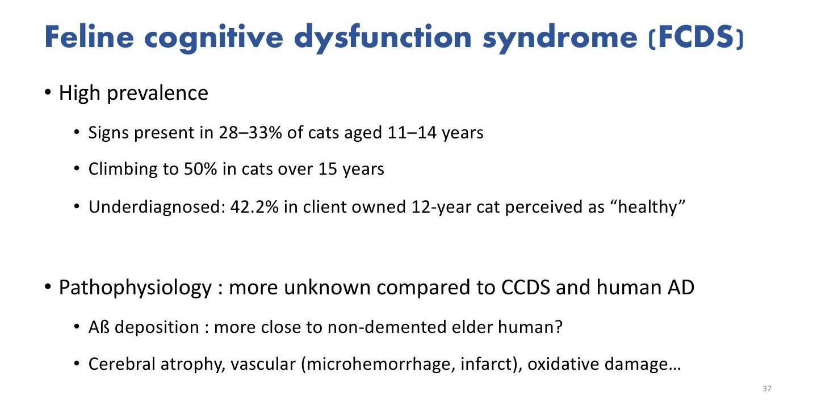
- 盛行率高：11–14 歲貓 28–33% 有症狀，15 歲以上上升到 50%。
- 低估：被飼主認為「健康」的 12 歲貓中有 42.2% 其實有症狀。
- 病理生理比犬 CCDS 和人類 AD 更不清楚：Aβ 沉積型態可能比較像沒有失智的老年人？另有腦萎縮、血管病變（微出血、梗塞）、氧化傷害⋯

| 投影片 | 中文 |
|---|---|
| Clinical signs: VISHDAAL | 臨床症狀縮寫 VISHDAAL（貓比犬的 DISHAA 多了 V 和 L） |
| Vocalization: inappropriate nocturnal crying — disorientation, panic, or intense social attention-seeking | 異常叫聲：不適當的夜間嚎叫，原因可能是迷失方向、恐慌或強烈尋求關注 |
| Most frequent sign (40.0%) in FCDS | FCDS 最常見的症狀（40.0%） |
| Learning and memory deficits | 學習與記憶缺損 |
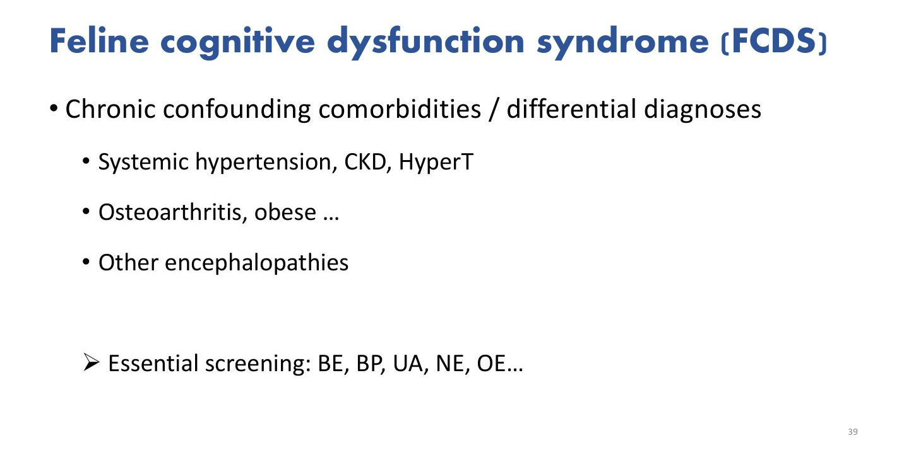
- 常見的干擾共病／鑑別診斷：全身性高血壓、CKD、甲狀腺機能亢進；骨關節炎、肥胖；其他腦病。
- 必要篩檢：生化、血壓、尿檢、神經學檢查、眼科檢查⋯
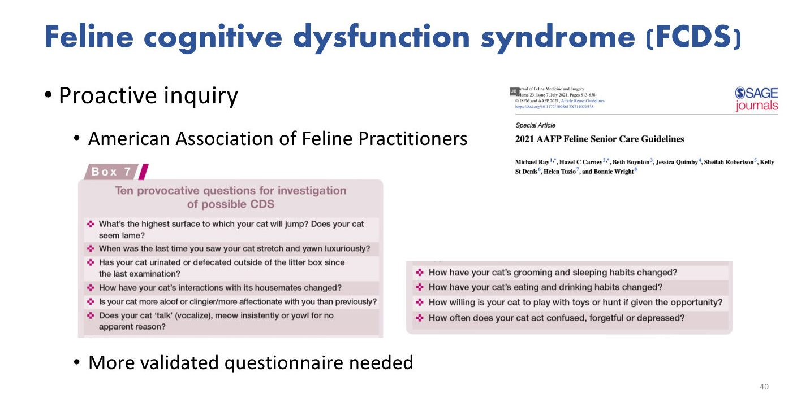
飼主不一定會主動提，要主動詢問。AAFP 2021 Feline Senior Care Guidelines（Ray et al., JFMS 2021;23:613–638）Box 7「懷疑 CDS 時的十個問題」：
- 貓能跳上的最高處是哪裡？看起來會跛嗎？
- 上次看到牠舒服地伸懶腰、打哈欠是什麼時候？
- 上次看診後，有沒有在貓砂盆外大小便？
- 牠和家中其他動物的互動有沒有改變？
- 牠對你是比以前冷淡，還是更黏、更親人？
- 牠會不會無緣無故「講話」、一直叫或嚎叫？
- 理毛和睡眠習慣有沒有改變？
- 吃喝習慣有沒有改變？
- 有機會時，牠還願意玩玩具或狩獵嗎？
- 牠多常看起來困惑、健忘或沮喪？
需要更多經過驗證的問卷。
🎤 貓目前沒有像狗那樣經過驗證的飼主問卷，所以要靠這些問題主動詢問。


- 低入口貓砂盆（方便關節炎老貓進出）。
- 感官引導：協助夜間視覺（夜燈）。
- 空間一致性：擺設不要變動，避免空間定向障礙引發恐慌。
- 費洛蒙療法：Feliway⋯
- 運動／生活環境的影響？住在鄉村環境（空氣污染、肥胖⋯？）
- 🎤 貓不在對的地方上廁所，也可能是關節疼痛，所以好進出的貓砂盆有幫助；食盆、水盆、貓砂盆的位置不要常換。
- 🎤 一篇風險因子研究發現住農村的貓 CDS 比例較低：可能空氣較乾淨，或國外農村貓多放養、活動量大、較少肥胖；仍需更多研究。

- 抗氧化物（維生素 E、C、L-carnitine）、Omega-3（EPA／DHA）、SAMe。
- MCT 補充可能增加食物厭惡／厭食。
- 對貓來說適口性很重要！！
- 🎤 貓比狗更會「不想吃就直接不吃給你看」，給之前要多注意。
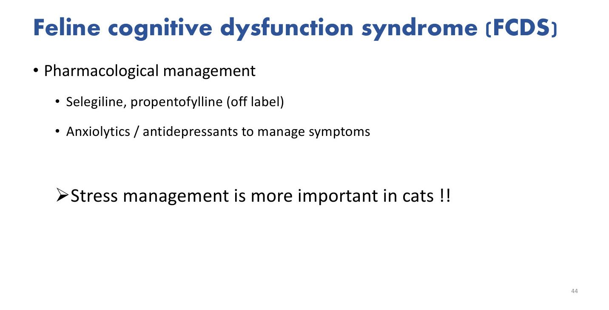
- Selegiline、propentofylline（貓為仿單外使用）。
- 抗焦慮藥、抗憂鬱劑用來控制症狀。
- 對貓來說，壓力管理更重要！！
- 🎤 睡不著或很焦躁，可用 gabapentin 這類舒緩藥控制症狀。
- 🎤 為了做環境豐富化反而讓貓更緊迫，壞處可能比好處多。
10. 結論
▾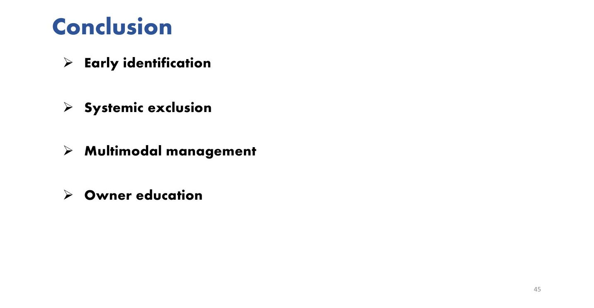
- 早期辨識
- 系統性排除其他疾病
- 多模式治療
- 飼主衛教
- 🎤 很多飼主只覺得狗貓「老了」，但 CDS 是一種病，早期發現有機會治療或延緩。
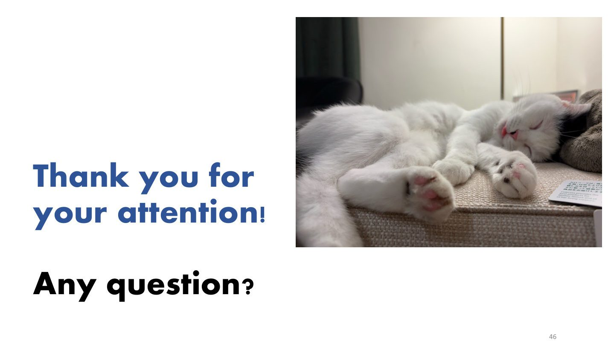
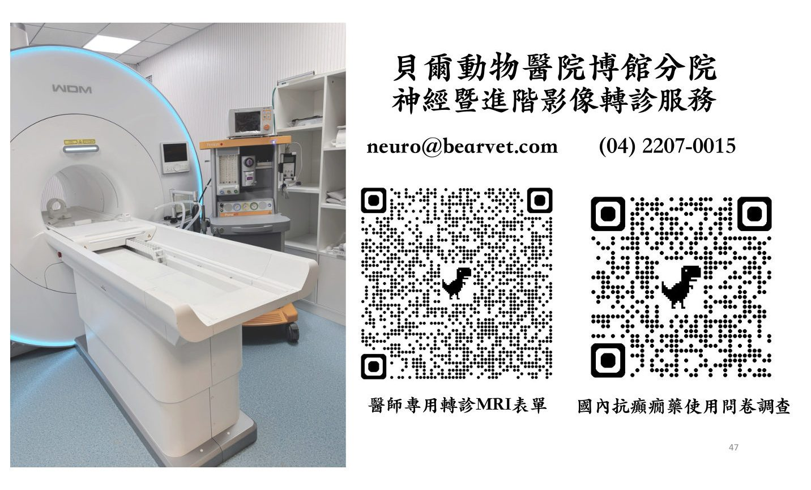
貝爾動物醫院博館分院提供神經暨進階影像（MRI）轉診服務；投影片附醫師專用轉診 MRI 表單，以及「國內抗癲癇藥使用問卷調查」QR code。
11. Q&A
▾🎤 以下皆為錄音內容（主持人代念聊天室提問）。
💡 tramadol、amitraz 也要避免（見 §5）。
💡 常提到的解毒藥是 cyproheptadine（血清素拮抗劑）；其他症狀包括高體溫、震顫、肌陣攣、心搏過速。
💡 例如小劑量 butorphanol（部分拮抗）或低劑量、分次給 naloxone，可以減輕煩躁又保留部分止痛。
🎤 腦部疾病中，結構性病變造成腦壓上升、壓迫腦幹確實可能猝死。CCDS 影響最廣的是大腦，影像上腦幹、小腦也可能萎縮，但症狀通常不會這麼嚴重、進展也不會這麼快。
主持人：問卷之後貼在社團，謝謝陳醫師與 MSD 贊助卓越講堂。